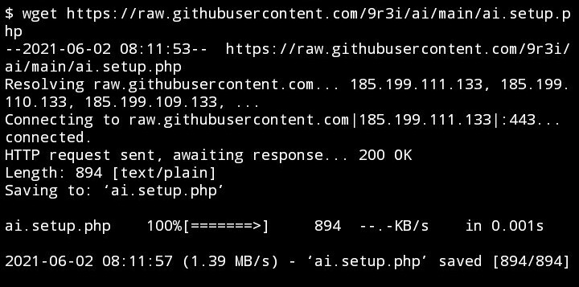
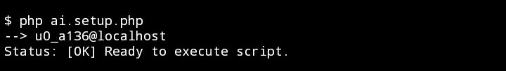
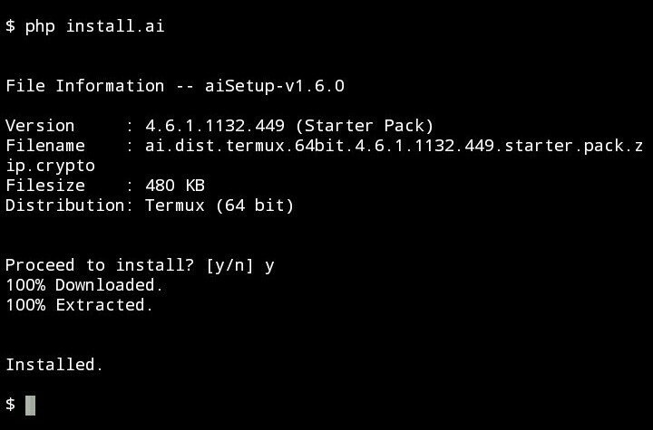
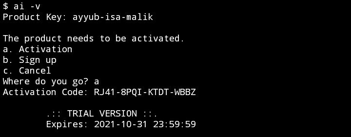
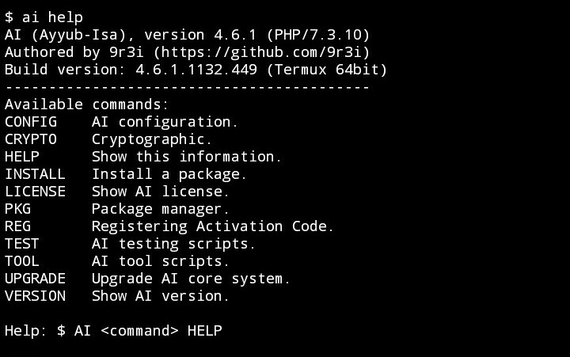

AI (Ayyub-Isa) Console System
(not artificial intelligence)
بِسْمِ اللَّهِ الرَّحْمَٰنِ الرَّحِيمِ
[English US] ·
[Bahasa Indonesia] ·
[Manual]
A. Introduction
Alhamdulillah, all praises only belonging to Allah SWT who has given His rahmah and guidance to finish this system easily.
Introduce AI, not Artificial Intelligence, but it's only the abbreviation of my sons' names (AI stands for Ayyub-Isa).
AI is the system on console platform and cli system, written in C, and only run in few operating system.
After a few times of updates, starting from version 2.0.0, finally AI was written in PHP as well and could be included in the language. Because the first reason is to fasilitate of website building, but eventually the needs are going on and then the final decision is going to PHP, while C is only for binary file of execution file only.
Although today it's been upgraded till version 4, but AI is not released to public yet to be sold, because the main purpose is only for private use, with private license, private operations and private functions only.
And now, I encourage myself to make AI commercial stuff. After all these years I failed with Android Applications, right now I'm starting hopeless to sell the same application. Not frustrating about Android Apps, but as 'ikhtiar' and digging any potential, with different method and different payment.
Generally, most of paid softwares have trial version. So, for anyone who wants to try first or unable to effort to buy this system, you'll be provided a trial version of it, of course with limited access, by-the-way.
Among the usages, the purposes and the advantages of AI system and the most powerful is the encryption. Files, data, documents and communications are more secure. And of course, no spying shit.
Features are provided, such as files encryption (of course), secure encrypted chat, basic proxy, version control, and few more that cannot be written here.
B. Requirements and Preparations
For now, the distribution versions of AI are only 3 of kind:
1. Android 5 or higher in Termux console 64bit and 32bit
2. Linux* in Terminal console 64bit only
3. Windows 7 or higher in CMD console 32bit only
If the operating system you use is not required, then the installation process will be failed.
*) Tested Linux: Ubuntu, Debian, ArchLinux (Arch), CentOS (RHEL) and Linux Mint (Ubuntu/Debian).
The next is PHP cli version 7.0 or higher, with extensions:
- zlib*
- openssl*
- mbstring*
- sqlite3*
- curl
- zip
- sockets
- json*
- readline**
- gd**
- ftp**
- exif**
- calendar**
- bz2**
- bmath**
*) if not available on default
**) optional and recommended
For more detail to install PHP in your operating system, visit this link: fb.com/3109029549150783
Then you must prepare an empty directory:
- Android (/sdcard/9r3i/ai)
- Windows (%SystemDrive%\9r3i\ai)
- Linux (/9r3i/ai) with permission public read and write (40666).
C. Installation
1. Get the script file or simply download from this URL
--> https://raw.githubusercontent.com/9r3i/ai/main/ai.setup.php
--> use curl or wget or anything else easier
--> sample using wget

2. Execute the PHP script and type this
--> php ai.setup.php

3. Start installation
--> php install.ai

4. Then try to type this
--> ai help
or try to look for version
--> ai -v

5. Insert the product key
--> Product key: ayyub-isa-malik
6. Activate the product
* Activation codes expire till October 31st 2021
--> RJ41-8PQI-KTDT-WBBZ
--> 9Y4P-YISF-MTXB-AZKF
* Activation code will be updated each month
7. Done, now try to type something, such as
--> ai help

D. Closing
All of perfections are belonging to Allah ﷻ, this system is nothing, it's only a carrier to His mercy.
May this thing be useful and helpful for anybody, especially for All muslim brothers and sisters around the globe.
الْحَمْدُ لِلَّهِ رَبِّ الْعَالَمِينَ
Note: For all users who have been tried the AI.
Please don't hesitate to ask any question, criticism, suggestions and anything else about this system.
Feel free to ask me about the AI system, anytime. Thanks.
Bekasi, June 2nd 2021
Abu Ayyub a.k.a. 9r3i